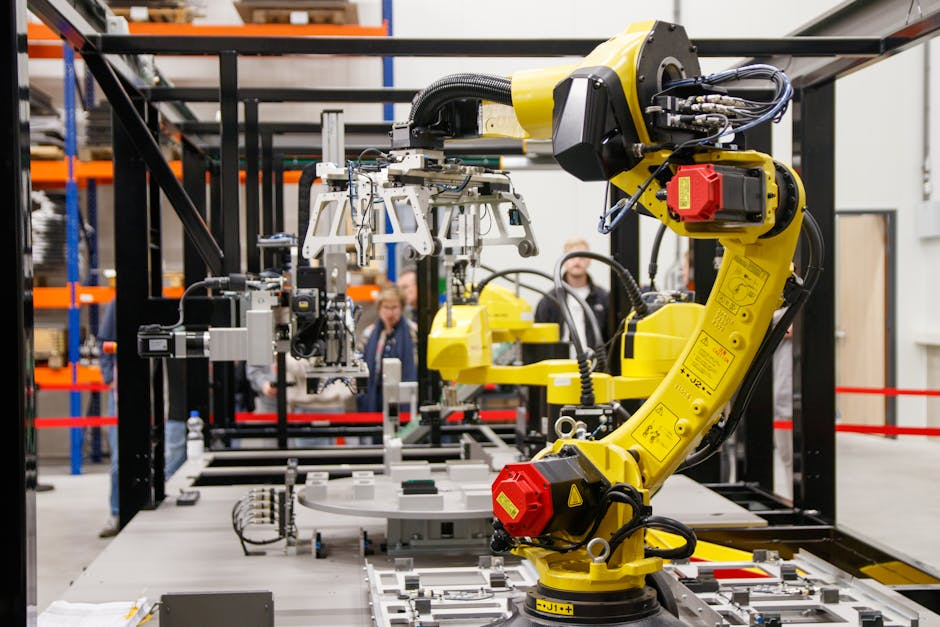

Step into almost any modern factory today, and you'll witness a fascinating ballet of precision, speed, and tireless efficiency. Giant robotic arms swing, intricate grippers delicately place components, and automated systems hum with purpose. This isn't science fiction; it's the reality of industrial robotics and automation, a powerful force that is reshaping manufacturing across the globe, including right here in India. From assembling your smartphone to painting your car, these incredible machines are the unsung heroes behind many products we use daily, making our world more productive, precise, and safe.
What Are Industrial Robots?
At its core, an industrial robot is an automatically controlled, reprogrammable, multi-purpose manipulator programmable in three or more axes. Think of them as incredibly strong, precise, and tireless "workers" designed to perform a variety of tasks in manufacturing and industrial environments. Unlike general-purpose computers, these machines are built for physical interaction with the world.
Types of Industrial Robots You Should Know
While the term "robotic arm" often comes to mind, there's a diverse family of industrial robots, each suited for different tasks:
- Articulated Robots: These are the most common type, resembling a human arm with rotating joints (axes). They are highly flexible and can perform complex movements, making them ideal for welding, painting, and assembly.
- SCARA Robots (Selective Compliance Assembly Robot Arm): Known for their speed and precision in the X-Y plane, SCARA robots excel at pick-and-place tasks and assembly operations where vertical movement needs to be rigid.
- Delta Robots: Often called "spider robots," these are characterized by their parallel kinematics structure. They are incredibly fast and precise, typically used for high-speed pick-and-place, sorting, and packaging of lightweight items.
- Cartesian/Gantry Robots: These robots move along three linear axes (X, Y, Z), similar to a coordinate system. They offer a large working envelope and high accuracy, often used for material handling, dispensing, and large-scale assembly.
- Collaborative Robots (Cobots): A newer, exciting category, cobots are designed to work safely alongside humans without safety cages. They are typically smaller, easier to program, and used for tasks like assembly, inspection, and machine tending.
Why Automation? The Need for Robots in Industry
The adoption of industrial robots isn't just a trend; it's a strategic necessity driven by several compelling advantages:
- Increased Productivity & Speed: Robots can work 24/7 without fatigue, breaks, or needing to sleep, significantly boosting production output.
- Enhanced Precision & Quality: With repeatable accuracy down to fractions of a millimeter, robots ensure consistent quality, reducing defects and waste.
- Improved Safety: By taking over dangerous, repetitive, or hazardous tasks (like welding, handling heavy loads, or working in extreme temperatures), robots protect human workers from injury.
- Cost Reduction: While the initial investment can be high, robots offer long-term savings through reduced labor costs, waste, and improved efficiency.
- Consistency: Robots perform tasks identically every time, ensuring uniform product quality, which is crucial in industries like electronics and pharmaceuticals.
"The future of manufacturing is not about replacing humans, but empowering them with tools that amplify their capabilities and create new opportunities." - MakerWorks Insight
Where Do We See Industrial Robots in Action?
Industrial robots are transforming virtually every sector of manufacturing. Here are some key applications:
Robots on the Assembly Line
- Automotive Industry: From welding car chassis to painting body panels and assembling intricate engine parts, robots are indispensable in modern car factories.
- Electronics Manufacturing: Robots precisely place tiny components on circuit boards, assemble smartphones, and test devices with incredible speed and accuracy.
- Food & Beverage: Robots handle delicate items for packaging, sort products, and even prepare meals in some advanced kitchens, ensuring hygiene and consistency.
- Pharmaceuticals: Precision is paramount here. Robots handle sterile materials, package medicines, and perform laboratory tasks with high accuracy, minimizing contamination risks.
Beyond Assembly: Other Key Applications
- Welding: Robots perform various welding techniques (spot, arc, laser) with superior consistency and speed compared to manual methods.
- Painting & Coating: Robotic arms apply paint and coatings evenly, reducing material waste and ensuring a flawless finish.
- Material Handling: This includes loading/unloading machines, palletizing (stacking boxes on pallets), and general pick-and-place operations.
- Machine Tending: Robots feed raw materials into machines (like CNC machines or injection molders) and remove finished parts, keeping production lines running smoothly.
The Anatomy of an Industrial Robot
To understand how these machines work, let's look at their main components:
- Manipulator (The Arm): This is the physical structure, often with multiple joints (axes) that allow it to move and reach different positions.
- End-Effector (The Hand): Attached to the end of the manipulator, this is the tool that performs the actual task. It could be a gripper, a welding torch, a paint spray gun, a vacuum suction cup, or even a camera for inspection.
- Controller (The Brain): This is the computer system that stores programs, processes sensor data, and sends commands to the robot's motors, dictating its movements and actions.
- Sensors: Robots often use various sensors (vision, force, proximity, tactile) to perceive their environment, detect objects, measure forces, and ensure safety.
- Power Supply: Provides the electrical or pneumatic (compressed air) energy needed to operate the robot's motors and components.
- Teach Pendant: A handheld device with buttons and a screen used by human operators to program, monitor, and troubleshoot the robot.
Robots in Action: Programming & Control
How do we tell a robot what to do? There are several ways:
- Teach Pendant Programming: An operator manually guides the robot through a series of desired movements, and the controller records these points.
- Offline Programming: Robot movements and tasks are programmed using specialized software on a computer, often with a 3D simulation of the robot and its workspace, before being uploaded to the actual robot.
At its core, robot programming involves a sequence of commands to move, interact with objects, and make decisions based on sensor input. Here’s a very simplified pseudo-code example for a robot performing a basic pick-and-place operation:
// Simplified Pseudo-code for a Pick & Place Robot Task
// Define a function for the pick and place sequence
FUNCTION PickAndPlaceItem():
SET robot_speed TO MEDIUM
// 1. Move to the item's pickup location
MOVE robot_arm TO (X_PICKUP, Y_PICKUP, Z_APPROACH) // Approach from above
OPEN gripper
MOVE robot_arm TO (X_PICKUP, Y_PICKUP, Z_PICKUP) // Descend to grab item
// 2. Grasp the item
CLOSE gripper
WAIT 0.5 seconds // Allow gripper to secure item
// 3. Lift the item
MOVE robot_arm UP BY 100mm // Lift item clear of surface
// 4. Move to the drop-off location
MOVE robot_arm TO (X_DROPOFF, Y_DROPOFF, Z_APPROACH) // Move to drop-off point
// 5. Release the item
OPEN gripper
WAIT 0.5 seconds // Allow item to drop
// 6. Retract and return to home position
MOVE robot_arm UP BY 100mm // Lift clear of drop-off point
MOVE robot_arm TO HOME_POSITION // Return to a safe, starting position
END FUNCTION
// Main program loop: Continuously check for items and perform task
WHILE TRUE:
IF SENSOR_DETECTS_ITEM_AT_PICKUP_LOCATION:
CALL PickAndPlaceItem() // Execute the pick and place sequence
ELSE:
WAIT 1 second // Wait if no item is detected
END WHILE
This code illustrates how a robot's "brain" translates instructions into physical actions, combining movement commands with sensor input and timing to complete a task.
The Future of Manufacturing: India's Robotic Revolution
India's manufacturing sector is booming, driven by initiatives like "Make in India." Industrial robotics and automation are pivotal to this growth. As Indian industries strive for global competitiveness, efficiency, quality, and safety, the adoption of factory robots is accelerating rapidly. This doesn't just mean more efficient factories; it means new job opportunities in areas like robot programming, maintenance, system integration, and design. For students in India, understanding and engaging with robotics, coding, and STEM fields is becoming increasingly vital for future careers.
Conclusion
Industrial robots are far more than just machines; they are intelligent tools that are redefining what's possible in manufacturing. They enable us to produce goods faster, with higher quality, and in safer environments. As we look to the future, these robotic arms will continue to evolve, becoming even more intelligent, collaborative, and integrated into our daily lives. The journey into robotics is an exciting one, full of innovation and endless possibilities.
Are you ready to be part of India's robotic revolution? Explore the world of STEM, dive into coding, and consider how you can contribute to shaping the automated future. At MakerWorks, we believe in empowering the next generation of innovators. Join our workshops, explore our resources, and start building your own robotic dreams today!